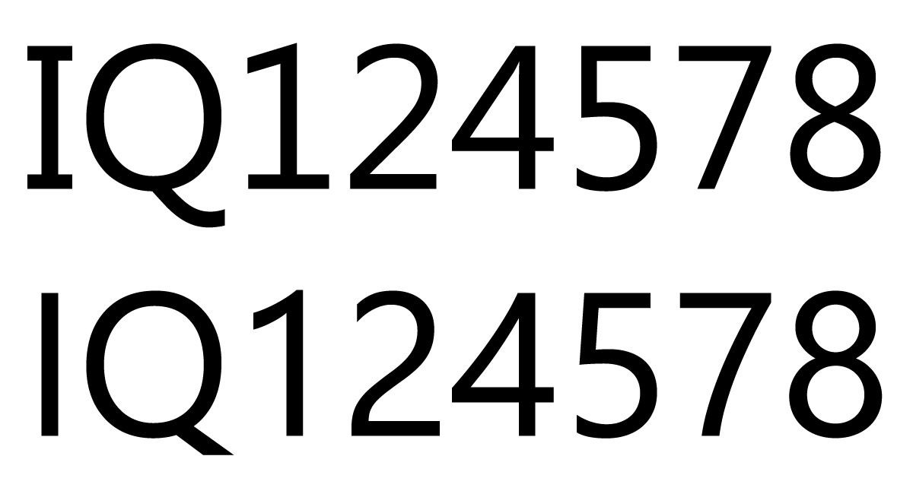

References / Typeface / 58
Segoe UI typeface
The humanist sans-serif that actually set the text of Vista and Windows 7, and the typeface behind the “Frutiger” in the name.
- Source
- Wikipedia: Segoe
- Creator
- Steve Matteson (Agfa Monotype), for Microsoft
- Made
- Segoe designed c. 2000 at Agfa Monotype; Segoe UI first introduced with Windows Vista
- Style
- Frutiger Aero (interface type; agent-proposed, not yet reviewed by a person)
- Moods
- Friendly, clear, humanist
- Evidence
- Inspected File:Segoe UI Revision Differences.png (1200 × 650, PD-font) and stored it. Also saw Segoe UI in the Vista and Windows 7 screenshots inspected for Windows Vista and Windows 7.
- Reviewed
- Rights
- Open license, stored. License: public domain. Rights policy

Context
Segoe was designed by Steve Matteson at Agfa Monotype and licensed to Microsoft. Segoe UI “was first introduced with Windows Vista” and replaced Tahoma as the interface font; Light and Semibold weights came with Windows 7. Wikipedia: Segoe.
In 2004 Linotype protested Microsoft’s EU design registration of Segoe, citing its similarity to Frutiger; the EU revoked the registration. Microsoft states that Segoe was not derived from Frutiger. Wikipedia: Segoe.
CARI says Frutiger “originally inspired Vista’s default font (Segoe UI).” CARI: Frutiger Aero. This is CARI’s claim; Microsoft disputes derivation.
In October 2011 the letters I and Q and several figures were redrawn; I, Q, and 1 became closer to Frutiger. Wikipedia: Segoe.
Observed
- The top line (Vista and Windows 7 version) shows “IQ124578” with round, open forms; the I has serifs, the 1 has a foot, and the Q tail sweeps down and out to the right.
- The bottom line (2011 revision) has a plain I, a 1 without a foot, and a short straight Q tail; the 2, 4, 5, 7, and 8 are also redrawn.
- In the Vista and Windows 7 screenshots, menu and window text is set in small, even, humanist sans-serif.
Why it belongs
If a catalogue specimen needs “the” Frutiger Aero typeface, Segoe UI is the documented interface face; Frutiger names the tradition. Both are humanist and open.
Borrow
Use Segoe UI (or a free humanist substitute) at small, regular weights for body and control labels; keep headings light rather than heavy.
Measured
Machine-extracted by tools/image-traits.py on . Full measurement.
- Mean chroma
- 0
- Palette
- #000000 54%
- #ffffff 43%
- #131313 1%
- #ececec 1%
- #d7d7d7 0%
- #5e5e5e 0%
- #878787 0%
- #b1b1b1 0%

